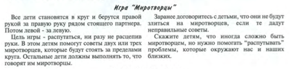

«Блаженны миротворцы, ибо они сынами Божиими
нарекутся»

(Вспомнить
с детьми и повторить пройденные заповеди)
В большинстве этих заповедей подчеркивается
внутренний настрой человека, а в нескольких — внутренний настрой плюс действие.
Но эта заповедь главный упор делает на действии.
В нашем тексте Божье обетование адресовано тем, кто активно добивается мира. Исполнение
всех предыдущих заповедей блаженств, это
как шаги человека на пути к миру, как ступеньки. И возникает мир небесный, мир
совершенный, мир Божий. «Мир Божий, который превыше всякого ума,
соблюдет сердца ваши и помышления ваши во Христе Иисусе». (Фил.4:7)
Блаженны миротворцы, ибо они сынами Божиими нарекутся.
(Вспомнить с детьми что значит Блаженны)
Что предполагает слово «миротворец» и что имеется в виду под «сынами
Божиими»?
Бог создал человека для мира. А что такое мир, как вы
думаете?
Слово «мир» имеет три значения:
1-е значение: мир – Вселенная, Космос, мироздание.
2-е значение: мир – есть духовная, внутренняя тишина,
мир с совестью и Богом.
3-е значение: мир есть дружба, согласие между людьми и
народами.
В мире существуют миротворческие войска. То есть войска, призванные в
тот или иной уголок земли для прекращения войны и воцарения мира (т.е.
установления политической стабильности). В библейском понимании мир –
это нечто другое. Иисус говорил нам о Божьем мире. Да и среди евреев до сих пор
существует приветствие – «шалом», что означает: «мир вам» или «да благословит
вас Господь». Значит в библейском понимании мир – это благословение Господне. Мы должны быть миротворцами, т.е.
теми, кто несет Божие благословение в мир.
Господь обещал благословить не миролюбцев-те
кто любит мир (хотя это, несомненно, похвально) или тех, кто говорит о мире
(что иногда бывает нужно), а именно миротворцев. Бог не обещал
благословить тех, кто верит в «мир любой ценой». Некоторых считают миролюбивыми
людьми, потому что они всячески избегают любых проблем. Вместо того чтобы смело
взглянуть в лицо потенциальной проблеме и разобраться с ней, они игнорируют ее
в надежде, что все решится само собой. Обычно такого не происходит, и все заканчивается
еще большей проблемой, чем была вначале.
А кто такой миротворец? (Ответы детей)
Давайте обсудим:
Как ведут себя миротворцы? Любят ли они спорить, командовать? Или,
наоборот, стараются уступить, услужить? Как вы думаете?
Миротворец – тот человек,
который со всеми живет в мире и любви, не допускает ссор, старается примирить
тех, кто враждует. Он приходит с миром который
приносит силу разрешать конфликты.
Миротворцы это те, кто наводит мосты между враждующими.
Групповая работа
Представьте, что у
нас в школе открывается детский клуб «Миротворец». Придумайте и запишите 5
основных законов, которым обязательно должны следовать члены этого клуба.
Блаженны миротворцы, ибо они сынами Божьими нарекутся
Ты поссорился с другом. Ты сердишься на него, он — на тебя, каждый
считает, что он прав. Вы расходитесь в разные стороны, неся в душе
нерастраченные гнев и обиду, и обрушиваете их на ни в чем не повинных людей. И
заражаете гневом другого человека. А тот — следующего… Так, по цепочке, гнев
может разойтись очень далеко. И везде вспыхивать маленькой войной, враждой, как
вредный вирус, как эпидемия. Но точно так же может распространяться и добро!
Это важно помнить. Особенно тогда, когда ты в ссоре, в гневе и уверен, что
правда на твоей стороне. Ты считаешь, что вправе унизить, побить, оскорбить
другого человека, потому что ты прав. Но если в этот момент остановиться,
сдержаться и не сделать этого, а, наоборот, найти слова примирения,
восстановить сначала мир в своем сердце, а потом и со своим соперником, то этот
мир вокруг тебя станет распространяться. И ты станешь «миро-творцем»
— то есть творцом мира. Согласно Библии, быть
миротворцем — или миролюбивым человеком — означает больше, чем лишь быть мирным
и спокойным. Мирными и спокойными могут быть даже покойники. Нужно
"творить мир". Такой человек излучает доброжелательность и
содействует миру.
Первый пример, это конечно, Христос, примиривший
земное и небесное. Он истинный миротворец.
Он обещанный Богом Примиритель. (Быт.49:10.)
(Старшим можно сказать)-Он
есть мир наш. «Ибо благоугодно было Отцу, чтобы в Нем
обитала всякая полнота и чтобы посредством Его примирить с Собой все,
умиротворив через Него, кровью креста Его, и земное, и небесное». (Кол.1:19,20).-
Иисус сказал
ученикам : «Мир оставляю вам, мир Мой даю вам» (Ин.
14:27а)
Нам важно помнить слова: «Старайтесь иметь мир со
всеми» (Евр. 12:14; см. 2 Тим. 2:22 )
В Библии много иллюстраций
того, насколько миротворцу важно быть бескорыстным.
Например, Авраам сказал своему племяннику Лоту: «Да не будет раздора между мною и
тобою, и между пастухами моими и пастухами твоими, ибо мы родственники» (Быт. 13:8). А затем дал ему возможность
выбрать себе участок земли (ст. 9-12), хотя право первенства в выборе было за
ним. Можно привести и другие примеры: Исаака, который любил мир больше
собственности (см. Быт. 26:17-22), и Ионафана, который бескорыстно пытался
примирить своего друга Давида со своим отцом Саулом (см. 1 Цар.
18:1; 19:2-6; 20:30-33).
Еще важна мудрость (см. Прит. 25:11; Иак. 1:5). В
некоторых ситуациях самый большой вклад, который мы можем сделать для
сохранения мира, это держать язык за зубами. Вы не настоящий друг, если
передаете своему другу недобрые слова, сказанные кем-то в его адрес. Соломон
писал: «Где нет больше дров,
огонь угасает, а где нет наушника, раздор утихает» (Прит.
26:20). А еще нужно терпение (см. 1
Фес. 5:14), сила и смелость (см. 2 Кор. 5:6, Еф. 6:10)
Чтобы стать миротворцем необходимо:
Первое: Самим иметь мир внутри (мы
можем чем-то поделиться только в том случае, если это «что-то» у нас есть. Ты
поступаешь так, как есть у тебя внутри. А «мир»,
который имеет миротворец, он получает от Бога.)
Второе: Возлюбить врагов.
Заповедь дана Иисусом в контексте «Нагорной проповеди», где Он говорит: «любите
врагов ваших, благословляйте проклинающих вас, благотворите ненавидящим вас и
молитесь за обижающих вас и гонящих вас» (Мф. 5:44)
Усилия по восстановлению мира иногда не
ценятся. Попытки с нашей стороны восстановить мир
могут расцениваться как вмешательство в чужие дела. Кроме того, если мы
отказываемся принять чью-то сторону в конфликте, то можем подвергнуться
нападению с обеих сторон. Поэтому если мы миротворцы, то люди иногда будут
называть нас «сынами Божиими»—но не всегда. Кто же тогда наречёт
миротворцев «сынами Божиими»? Бог. Тех, кто способствует миру, Он
признает Своими детьми.
Нам не
всегда сразу бросалось в глаза, как некоторые заповеди блаженства связаны со
счастьем, но с этой заповедью всё гораздо проще.
Трудно быть счастливым в атмосфере враждебности и беспорядка, но работающие над
тем, чтобы достичь мира, счастливы. Только
подумайте: разве счастливы люди раздражительные,
всегда готовые обидеться или затеять ссору? Это несчастные люди, и единственная
их «радость»—сделать несчастными и других. А кроткие, добрые, любящие,
дорожащие миром и делающие всё для того, чтобы дома, в церкви, среди соседей и друзей был мир? Вы
сами знаете, в которой из этих двух групп люди
счастливее.
«...ИБО ОНИ БУДУТ
НАРЕЧЕНЫ СЫНАМИ БОЖИИМИ»
Фраза «сын [кого-то]» у евреев
означала, что этот человек имеет одинаковую природу, свойство
с кем-то или чем-то. «Сыны Божии»—это те, у кого общая природа с Богом. В
нашем тексте выражение «сыны Божии» относится конкретно к тем, кто, как и Бог,
проявляет себя миротворцем.
Говорим
мы о мире с Богом или о мире с людьми, нам нужно понимать, что без Господней помощи
успеха достичь невозможно. Как мы уже отмечали, «мир» — это часть «плода Духа»
(Гал. 5:22). И иметь мир с Богом, а также обрести мир с другими людьми мы можем
только в том случае, если позволим Духу Божьему и Его Слову (Еф. 6:17) управлять нашей жизнью.
Поэтому миротворцы – это такие
люди, которые, подобно Иисусу Христу, имеют доброе сердце, чтят Бога, стремятся
помочь ближнему. Те, кто устанавливает мир в себе, вокруг себя, во всем мире,
берут пример с Христа, уподобляются Ему, и поэтому их можно назвать сынами, то
есть детьми Божьими. Так как продолжают дело мира Иисуса Христа на
земле. «Все, водимые Духом Божьим, суть сыны Божии» (Рим.8:14)
----------------------